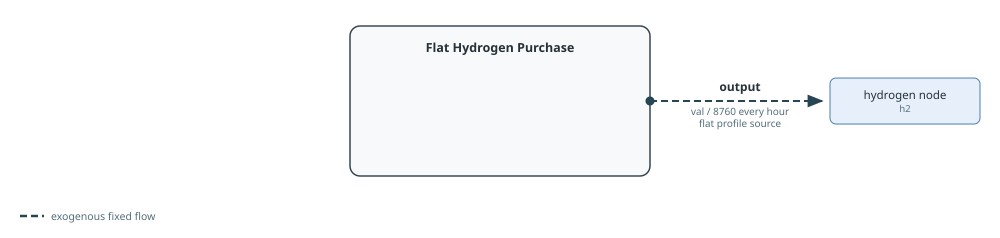
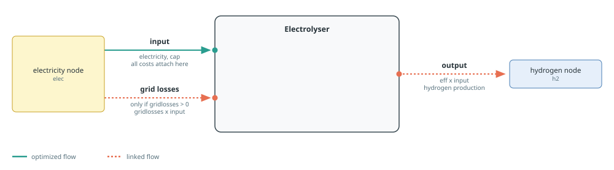
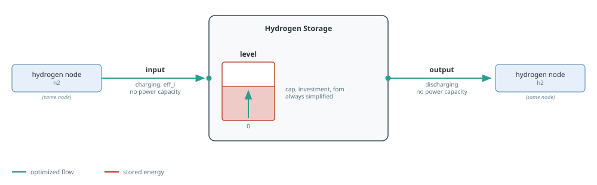

Hydrogen
Hydrogen can be supplied exogenously, produced from electricity, and moved across time. Hydrogen demand builders are documented on the Demand And Flexibility page.
See Component Builders for shared naming, workbook, capacity, and port conventions, and Tags And Post-Processing for tagging and reporting. Each section's diagram follows the conventions in Reading The Port Diagrams.
Purchased Hydrogen
makeflathydrogenpurchase represents an exogenous hydrogen supply. It creates fixed output capacity val / 8760 with a constant profile, so val is the total annual hydrogen-energy purchase. It reads no workbook and adds no cost. Add an explicit Nosy cost behaviour when purchases should affect the objective.

The generated name is "$cname $(n.name)".
Tags: :tech => cname, :zone => n.name, and the function tags hydrogen and purchase.
Posy2.makeflathydrogenpurchase — Function
makeflathydrogenpurchase(cname::String, n::Node, val::Real, s::Snapshot)Build, connect and return a flat hydrogen purchase component.
Arguments:
cname: component name prefix.n: hydrogen node to connect the component to.val: yearly purchased hydrogen amount, converted internally to a flat hourly capacity (val / 8760).s: snapshot to register the component in.
Electrolysers
makeelectrolyser creates a converter with electricity input and hydrogen output. The output-to-input ratio is eff. In :excel mode, omitted values come from the electrolysis technology column. In :arguments mode, eff defaults to one and costs to zero; lifetime and construction data are required only for nonzero overnight cost, and the decommissioning profile only when decommissioning cost is active.

Capacity and all cost behaviours are attached to electricity input. A numeric cap fixes input power; a JuMP variable or affine expression reuses an external decision; nothing creates a new decision; and an extracted snapshot fixes capacity from the matching component. mincap and maxcap bound either variable form. gridlosses adds a proportional electricity input flow.
The generated name is "$cname $(elec.name)".
Tags: :tech => cname, :zone => elec.name, and the function tags demand, electrolysis, and hydrogen. These tags allow electrical consumption to appear in demand reporting.
See the Hydrogen Production example for a complete model using this builder.
Posy2.makeelectrolyser — Function
makeelectrolyser(cname::String, techkey::String, elec::Node, h2::Node, s::Snapshot;
cap=nothing, mincap=nothing, maxcap=nothing,
gridlosses=0.,
eff::Union{Nothing,Real}=nothing,
overnight_cost::Union{Nothing,Real}=nothing, om_fixed_cost::Union{Nothing,Real}=nothing,
decommissioning::Union{Nothing,Real}=nothing, lifetime::Union{Nothing,Real}=nothing, construction_profile=nothing, decommissioning_profile=nothing,
om_var_cost::Union{Nothing,Real}=nothing,
)Build, connect and return an electrolyser component.
Arguments:
cname: component name prefix.techkey: technology column name in theelectrolysistech data sheet.elec: electricity node to connect the component to.h2: hydrogen node to connect the component to.s: snapshot to register the component in.cap: Input capacity. A number fixes capacity, a JuMPVariableReforAffExprreuses that expression,nothingcreates a capacity decision, and an extractedSnapshotinherits the capacity of"<cname> <node name>"in it.mincap: Lower bound on an optimized or externally supplied capacity; checked as an assertion against a fixed or inherited one.maxcap: Upper bound on an optimized or externally supplied capacity; checked as an assertion against a fixed or inherited one.gridlosses: Proportional losses linked to electricity input flow (0 <= gridlosses < 1).eff: Electricity to hydrogen conversion ratio inBasicConverter. Ifnothing, readefficiencyfrom theelectrolysissheet.overnight_cost: CAPEX/FOM/lifetime inputs for annualized fixed cost terms. Workbook defaults are used when values arenothing.om_fixed_cost: CAPEX/FOM/lifetime inputs for annualized fixed cost terms. Workbook defaults are used when values arenothing.decommissioning: CAPEX/FOM/lifetime inputs for annualized fixed cost terms. Workbook defaults are used when values arenothing.lifetime: CAPEX/FOM/lifetime inputs for annualized fixed cost terms (> 0, integer-valued). Workbook defaults are used when values arenothing.construction_profile: CAPEX/FOM/lifetime inputs for annualized fixed cost terms. Workbook defaults are used when values arenothing.decommissioning_profile: Decommissioning cost share profile passed todecom_cost(...). Workbook defaults are used when values arenothing.om_var_cost: Variable O&M coefficient on input energy flow.
Hydrogen Storage
makehydrogenstorage creates a simplified storage component on a hydrogen node. Capacity is attached to level, not to charge or discharge power. A numeric cap fixes level capacity; a JuMP variable or affine expression reuses an external decision; nothing creates a new decision; and an extracted snapshot inherits the matching component's level capacity. mincap and maxcap bound either variable form.

In :excel mode, omitted values come from the storage technology column. In :arguments mode, eff defaults to one and economic terms to zero; inactive capital and decommissioning data are not required. Investment, fixed O&M, and decommissioning are attached to level. The builder intentionally adds neither a duration constraint nor a variable O&M cost, making it suitable for medium- or long-duration storage whose power is not sized separately.
The component is named "$cname $(h2.name)".
Tags: :tech => cname, :zone => h2.name, and the function tags hydrogen and storage.
See the Hydrogen Production example for a complete model using this builder.
Posy2.makehydrogenstorage — Function
makehydrogenstorage(cname::String, techkey::String, h2::Node, s::Snapshot;
cap=nothing, mincap=nothing, maxcap=nothing,
eff::Union{Nothing,Real}=nothing,
overnight_cost::Union{Nothing,Real}=nothing, om_fixed_cost::Union{Nothing,Real}=nothing,
decommissioning::Union{Nothing,Real}=nothing, lifetime::Union{Nothing,Real}=nothing, construction_profile=nothing, decommissioning_profile=nothing,
)Build, connect and return a hydrogen storage component.
Arguments:
cname: component name prefix.techkey: technology column name in thestoragetech data sheet.h2: hydrogen node to connect the component to.s: snapshot to register the component in.cap: Storage level capacity. A number fixes capacity, a JuMPVariableReforAffExprreuses that expression,nothingcreates a capacity decision, and an extractedSnapshotinherits the capacity of"<cname> <node name>"in it.mincap: Lower bound on an optimized or externally supplied capacity; checked as an assertion against a fixed or inherited one.maxcap: Upper bound on an optimized or externally supplied capacity; checked as an assertion against a fixed or inherited one.eff: Roundtrip storage efficiency (eff_iinBasicStorage). Ifnothing, readroundtrip_efffrom thestoragesheet.overnight_cost: CAPEX/FOM/lifetime inputs for annualized fixed cost terms. Workbook defaults are used when values arenothing.om_fixed_cost: CAPEX/FOM/lifetime inputs for annualized fixed cost terms. Workbook defaults are used when values arenothing.decommissioning: CAPEX/FOM/lifetime inputs for annualized fixed cost terms. Workbook defaults are used when values arenothing.lifetime: CAPEX/FOM/lifetime inputs for annualized fixed cost terms (> 0, integer-valued). Workbook defaults are used when values arenothing.construction_profile: CAPEX/FOM/lifetime inputs for annualized fixed cost terms. Workbook defaults are used when values arenothing.decommissioning_profile: Decommissioning cost share profile passed todecom_cost(...). Workbook defaults are used when values arenothing.
Related demand builders: makeflathydrogendemand and makeflexhydrogendemand.